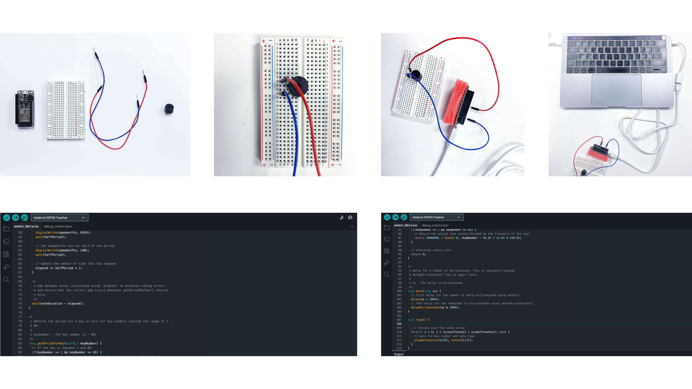
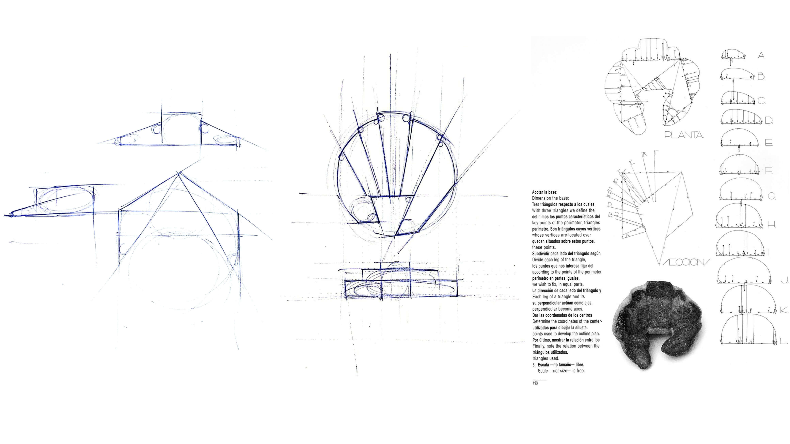
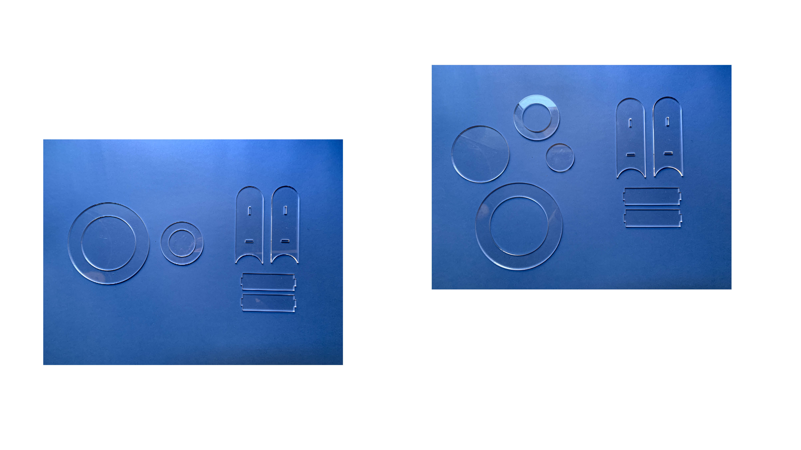
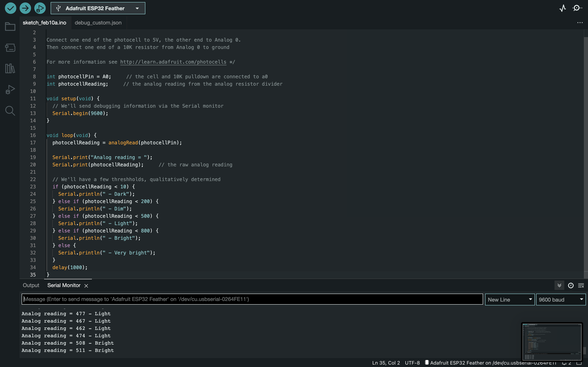
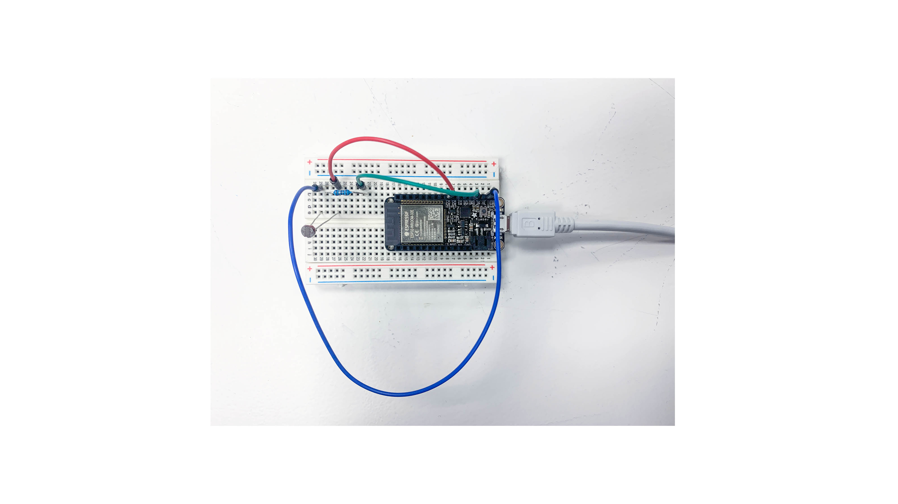
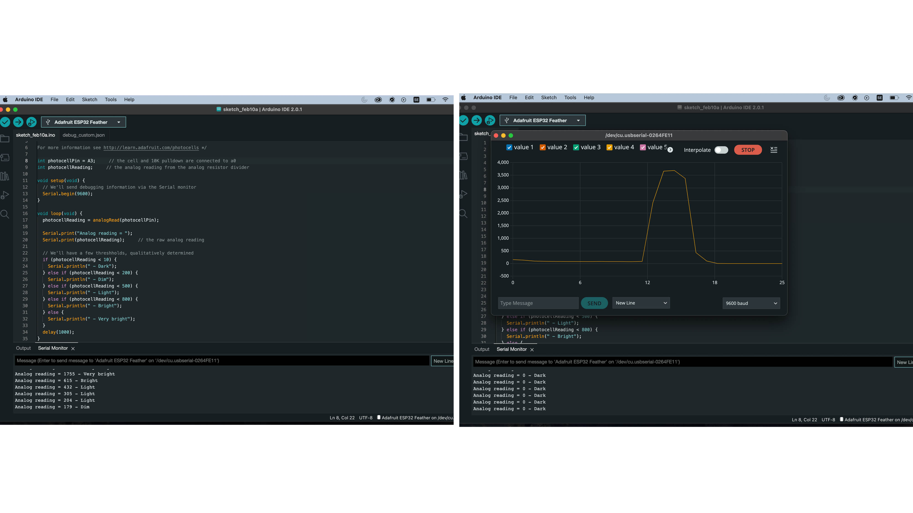

PROTOTYPING FOR DESIGN¶
This section will be part of a weekly journal where I’ll be documenting what we are doing during the course Prototyping for Design. Parts of it will be very simple documentation of the process for future use and understanding
P R O T O T Y P I N G T O G E T H E R 01.02.23
Starting off the course we were reintroduced to electronics and Arduino receiving homework to create music with an ESP32 and a buzzer. Since I haven’t worked with it before the one week course during the first term I will be documenting this step by step for remembering how to get started in the future.
Creating music with Arduino and buzzers We used a ESP32 microcontroller, a Piezo buzzer that is an electronic component that can make sounds, beeps or play music, a bread board and connection wires and pins which are then connected through Arduino IDE and code to make sounds.
There are lots of tutorials that show how to do this exercise where I followed this one for setting up the microcontroller, breadboard and buzzer. For the code I used an already existing one where I practiced creating a loop instead of the music stopping and tried different melodies.
For me, this exercise was a good refresh in what we did in the first term, allowing me to in a simple exercise practice restarting Arduino IDE, where we hade to reinstall a new version, but most of all it was a good way to learn how to search for information about how to get started with projects and what to search for to find relevant information.

D I G I T A L I Z I N G - R E A L I T I E S 02.02.23 Today we had a presentation about digital tools for 2D, 3D, parametric and generative deisgn. We started off by communally adding programs we have worked with in the past to a Miroboard. I have used 2D and 3D programs for modelling before such as Illustrator, Rhino, Solidworks, Grasshopper, Sketchup to create 3D and 2D models and files for digital manufacturing, where I now saw so many interesting programs and other ways of working. Although I have worked in 2D and 3D to create models and files for digital fabrication there were many terms and things I was not aware about or not complete sure of why I used, I had just learnt that that’s how you do it.
List
Computer Aided Design (CAD) Computer Aided Manufacturing (CAM)
Building Information Modeling (BIM) is the foundation of digital transformation in the architecture, engineering, and construction (AEC) industry. A holistic process of creating and managing information for a built asset. Based on an intelligent model and enabled by a cloud platform, BIM integrates structured, multi-disciplinary data to produce a digital representation of an asset across its lifecycle, from planning and design to construction and operations.
Pixel: square in a x/y grid, smallest unit of bitmap images (called rester image or bitmap)average phone take millions of pixels in an image (GPU processed) Light data to store but heavy file. In Computer graphics, a pixel, dot, or picture element is a physical point in a picture. A pixel is simply the smallest addressable element of a picture represented on a screen. A majority of pictures that we see on our computer screen are raster images. The selfie that you click with your mobile phone is another example of a raster image. An image is made up using a collection of pixels referred to as a bitmap. Each pixel is made up of RGB sub pixels. It allows to store complex textures and gradients. It has multiple formats with a variety of compressions and processing requires less processor load. It needs a lot of RAM to store textures and uses a lot of memory. It loses quality when enlarged
Bitmap: In computer graphics, a bitmap is a mapping from some domain (for example, a range of integers) to bits, that is, values which are zero or one. It is also called a bit array or bitmap index. The more general term pixmap refers to a map of pixels, where each one may store more than two colors, thus using more than one bit per pixel. Often bitmap is used for this as well. In some contexts, the term bitmap implies one bit per pixel, while pixmap is used for images with multiple bits per pixel.
Raster - Raster images use bit maps to store information. This means a large file needs a large bitmap. The larger the image, the more disk space the image file will take up. As an example, a 640 x 480 image requires information to be stored for 307,200 pixels, while a 3072 x 2048 image (from a 6.3 Megapixel digital camera) needs to store information for a whopping 6,291,456 pixels. We use algorithms that compress images to help reduce these file sizes. Image formats like jpeg and gif are common compressed image formats. Scaling down these images is easy but enlarging a bitmap makes it pixelated or simply blurred. Hence for images that need to scale to different sizes, we use vector graphics. File extensions: .BMP, .TIF, .GIF, .JPG
Vector - The geometrical (mathematical) description of an image. It can be enlarged as many times as you want without losing quality and allows for easy editing and changes. It is also lighter than pixel format images. Making use of sequential commands or mathematical statements or programs which place lines or shapes in a 2-D or 3-D environment is referred to as Vector Graphics. Vector graphics are best for printing since it is composed of a series of mathematical curves. As a result vector graphics print crisply even when they are enlarged. In physics: A vector is something that has a magnitude and direction. In vector graphics, the file is created and saved as a sequence of vector statements. Rather than having a bit in the file for each bit of line drawing, we use commands which describe a series of points to be connected. As a result, a much smaller file is obtained. The cons with vector formats are that they don’t store texture and don’t allow complex gradients as in photography. File extensions: SVG, EPS, PDF, AI, DXF
Basics of a computer · CPU · Vector. heavy mathematical equations · Constructed from millions of transistors, the CPU can have multiple processing cores and is commonly referred to as the brain of the computer. It is essential to all modern computing systems as it executes the commands and processes needed for your computer and operating system. The CPU is also important in determining how fast programs can run, from surfing the web to building spreadsheets. GPU · Graphic Processing Unit · Raster. The GPU is a processor that is made up of many smaller and more specialized cores. By working together, the cores deliver massive performance when a processing task can be divided up and processed across many cores.
RGB stands for red, green and blue. RGB uses light to produce color: the more illuminated light involved, the lighter the image. RGB produces the widest range of color. RGB colors are typically used on computer monitors, digital cameras and televisions — any device that uses light to produce an image.
CMYK stands for cyan, magenta, yellow and black. This category of color uses the combination of ink pigments to produce color. The less ink used, the lighter the image; the more ink used, the darker the image. Printing projects typically use the CMYK color category.
sRGB (storeRGB) Color utility, mainly used on internet, save as this when uploading. It has less cooler rendering and shouldn’t be used for printing.
Resolution is the product of width and height of a digital image expressed in pixels. How many pixels and the density are measured in pixels per inch (PPI) and are what determine the quality of an image 72 PPI used on the Internet 300 PPI high resolution image 320 PPI average of what a human eye can see 600 PPI are used in professional printers Phone screens today have normally around 400-600 pixel, some 900. can’t see the difference, marketing sales point
FILE FORMATS JPEG file compressing, loses quality for every time its opened PNG compression less - heavier image, but doesn’t lose quality
MESH // NURBS NURBS model consists of points connected by curves. (freeform modeling, fluid shapes with a lot of complexity, at the same time being easy to modify.) Its a mathematical model used in computer graphics to generate curves and surfaces. It generates a precise geometry with smooth surfaces with geometries that are mathematically defined using control points that create complex curves to form surfaces around them. Used by many 3D scans and is ideal for CAD based programs as it is more accurate, takes less space and is easy to translate to different programs.
MESH, GPU - A collection of verticles, edges and faces as a structural construction of a 3D model consisting of triangles, quadrilateral or other polygons. 3D meshes use reference points of x,y, z axes to define shapes with width, height and depth. Object smoothness is achieved by increasing the number of polygons within a model, this also affects the filesize making it very heavy. Not good for scaling as the polygons increase or decrease in size while scaling affecting the surface and form. STL file for manufacturing where it uses xyz points. 3Dscanners always a mesh, points in space, triangles that create the visual surface.
Modelling and 3D printing is usually based on a NURBS model and then converted to a MESH model for manufacturing in CAM
CAD surface models are usually created using NURBS surfaces, while 3D scans are typically exported as a polygon mesh. The conversion from a polygon mesh to a NURBS model is called “reverse engineering”. Worked by the CPU.
PARAMETRIC DESIGN a process based on algorithmic thinking that allows the expression of parameters and rules that together define, codify and clarify the relationship between design intent and design response. The term comes from mathematics and refers to the use of parameters or variables that allow the final result of an equation or system to be manipulated or altered. Its time saving, can create unique and exclusive designs, its adaptable to space conditions, contributes to greater architectural and manufacturing freedom where it goes hand in hand with digital fabrication without extra cost for same amount of effort to create different shapes, all shapes can be individual, high customisation. Traditional fabrication methods can’t realise the demand on this individualisation.
TOPOLOGY OPTIMISATION · Using Algorithmic Models to Create Lightweight Design · Topology optimization (TO) is a shape optimization method that uses algorithmic models to optimize material layout within a user-defined space for a given set of loads, conditions, and constraints. TO maximizes the performance and efficiency of the design by removing redundant material from areas that do not need to carry significant loads to reduce weight or solve design challenges like reducing resonance or thermal stress. Designs produced with topology optimization often include free forms and intricate shapes that are complex or impossible to manufacture with traditional production methods. However, TO designs are a perfect match for additive manufacturing processes that have more forgiving design rules and can easily reproduce complex shapes without additional costs.
GENERATIVE MODELLING Generative design is an iterative design exploration process that uses an AI-driven software program to generate a range of design solutions that meet a set of constraints. Unlike traditional design, where the process begins with a model based on an engineer’s knowledge, generative design begins with design parameters and uses AI to generate the model. By modifying the design parameters in an increasingly refined feedback loop, engineers can find highly optimized and customized design solutions to a wide range of engineering challenges, such as making product components lighter, stronger, and more cost-effective.
TOPOLOGY OPTIMISATION VS GENERATIVE MODELLING The start of its process requires a human engineer to create a CAD model, applying loads and constraints with project parameters in mind. The software then removes redundant material and generates a single optimized mesh-model concept ready for an engineer’s evaluation. In other words, topology optimization requires a human-designed model from the outset to function, limiting the process, its outcomes, and its scale. In a way, topology optimization serves as the foundation for generative design. Generative design takes the process a step further and eliminates the need for the initial human-designed model, taking on the role of the designer based on the predefined set of constraints.
AGENT MODELLING · Computer simulations used to study the interaction between people, places and time. Built bottom up meaning
LIST OF RESOURCES FROM FABLAB PRESENTATION CAD - Resources¶ Image compression tools Image compression for web size Image compression online tool
2D Design Tools Online SVG vector drawing online (Free + Opensource Graphic Editor) Online Raster edition program Online Vector edition program Inkscape (Free + Opensource Graphic Editor) Inkscape Introduction Inkscape - Lecture Gimp (Free + Opensource Image Editor) Gimp and Bitmap Introduction - Lecture QCad (Free + Opensource for CAD in 2D) QCad Introduction - Lecture Vectr on browser - free graphic editor
3D Design Tools 3D CAD: 3D Modeling Tools for Beginners Blender (Opensource 3D creation) Blender Introduction - Lecture Blender Master Class 2017 Freecad (Free + Opensource parametric 3D modeler) Freecad Introduction - Lecture Freecad for Beginners - Spanish! Rhinoceros 3D (Commercial 3D Cad software) Rhinoceros 3D - Nurbs
Grasshopper- Rhinoceros Resources Grasshopper Master Class 2017 File - Grasshopper Master Class SolidWorks (Commercial 3D Cad Software) Video tutorials for beginners, advanced, etc Lego tutorial by Ferdinand Meier Onshape OpenScad GENERATIVE WITH Fusion360
3D SCULPTING https://www.womp.com
EDIT FILE TOOL PIC SVG Image Conv, transform your images to sag vector files Tiny jpg - image compression Terrain STL
Repositories THINGIVERSE - STL Finder
Finite Element Analysis FEA Ameba plugin for grasshopper
3D video capturing time https://www.depthkit.tv
BLENDER image ai generator
https://www.simscale.com http://flowsquare.com https://jthatch.com/Terrain2STL/
As an exercise we were to during the presentation represent what we thought could be the parametric variables of a croissant. We could draw it by hand, digitally or directly on MIRO. I drew it quickly without thinking too much, where it is built up of geometric shapes. 
2 D - M O D E L L I N G 08.02.23 This week involved introductions to Lasercutting. I have worked with laser cutting before, although it was a while back. Yet again there were many terms and methods I haven’t known the names of or why they are used. I have used laser cutting for making patterns and stencils for moulds and prototypes.
Terms & Methods
CNC - Computer Numerical Control. Digital prototyping is CNC in different ways, laservutting etc (https://en.wikipedia.org/wiki/Numerical_control)
LASER Light Amplification by Stimulated Emission of Radiation - a technology that works by directing the output of a high power laser through optics. The focused laser beam is directed at the material, which then melts, burns, evaporates or is entrained by a gas jet, leaving an edge with a high quality surface finish
Digital Fabrication Input device, computer - saved file - output device - physical output CAM to CAD
Plastic, wood, cardboard, fabrics, organic materials
Micro processor vs microcontrollers (processor- like computer brain can freeze, controller like a button control, controlling hardware) https://www.naukri.com/learning/articles/difference-between-microprocessor-and-microcontroller/
https://www.archdaily.com/797107/50-downloadable-digital-joints-for-woodworking
Nesting - there are programs that do it for you Rhino nest, fusion has it too SVG Nest Tolerance- Laser is 0.2 Slicer Fusion - Stacks and names the pieces, helps to make waffle
References FabLab Lasercutting https://wiki.fablabbcn.org/Main_Page https://www.iaacblog.com/programs/courses/otf/
To put theory into practice we were to use a method to Laser cut something. I am currently working with water, where I am testing different clay modules to collect and hold water. This excercise was used to lasercut a simple form that will act as a mould for clay when drying where I am experimenting with forms in a modular system. a simple form that can be used as a mould to form clay and keep it in place while drying. I also lasercut a couple forms that we will be using as moulds for bio materials where we are creating different tableware, we chose as a group to make moulds in different forms that we could use to test different materials.From simple circular forms we can test size and material properties.
This was a good reintroduction to lasercutting as it was a while ago I used it, as well as learning terms and the use of different Lasercutting machines and how they work.

Therafter we were to choose a new peogram that we want to learn. I chose to work in Blender wehere I would like to learn how to create animations to compliment communication. I staretd with a simple animation of a bouncing ball to understand the program and methids that can be used, where I want to keep trying out fluids to make animations animating water flows.
I want to learn to work with animations and motion graphics to compliment the communication of this terms project about water systems, showing citizens how they work and how they can be hacked, this could be an interesting option. I therafter experimented with After Effects and motion graphics, where I tried different ways of simulating water. At the moment I am playing around in the programs to learn by doing.
I N P U T S & O U T P U T S 09.02.23 The second part of the week we learned about inputs and outputs, looking at different sensors, what they can do and how. We looked at how to choose a sensor for what you want to do, which was very good for a beginner in electronics.
This was very interesting to look at as I am within a group working with grey water, collecting, filtering and reusing it. Smart Citizen Kits exist for measuring water quality of the ocean, a great way for citizens to collect information about their surroundings to better understand it to enable actions. Could a similar kit exist for measuring water quality in tap water or in grey water collection for reuse? Could this give citizens a better understanding of the water systems in the city? Create trust to the information about the water systems available? Or distrust, empowering through knowledge to take actions and question the systems?
Another project - Clean Water AI - would also be interesting to work with and try, or could a combination of these projects create a simple way for citizens to use and understand there surroundings..
https://www.hackster.io/clean-water-ai/clean-water-ai-e40806 https://docs.smartcitizen.me/Components/Soil%20and%20water/#atlas-scientific-carrier-board https://www.demandsage.com/helium-10-alternatives/
To put theory into practice we worked with two different boards trying different inputs and outputs. The first board was to understand how to connect a LED and a button and to make the LED light up when the button is pressed. We learned that in Arduino IDE there are options with preset code which we used here choosing the option ‘Button’. We disconnected parts of the code as comments to test
We then worked on a board with a Photo Cell, which is a sensor allowing to detect light, experimenting with light resistance, testing different light properties in the room to start with before connecting it to the first board to therafter sense the LED light that lights up when the button is pressed. https://learn.adafruit.com/photocells
After adding pins and resistors it worked and showed light detected, although not very well, it didn’t show very much difference from dark and light. We used a 100K ohm resistor as the instructions assigned, and then tested different resistor ohms we tried a 10K which didnt change the resistance, there was still not a big difference from light to dark.

We then tried to change the code where instead of different values for light resistance, it would have a high and low, but this didnt work at all, so we went back to the first code we used and realised that there was information missing, where changing and updating the pinnumber made it work as we wanted. It then went from very bright to dark depending on the light in the room.
 
When testing the light resistancy together with the LED to see how the light resistancy could read the LED when lit we had problem with our LED not working anymore, we now have to find why it isn’t working before we can connect the boards.
N E T W O R K I N G 22.02.23
In this class we spoke about the internet and how it can be seen as one of the most complex copying machines ever invented. Built up and used in networks, which are a set of devices connected to each other through any type of communication lines that allow the exchange of data between them. In a way it’s network of devices that are copying bits from one place to another. When you access a website you’re only copying a file from one computer to yours.

Jeroen vaan Loon materializes a glass internet filled with smoke signals. For his latest piece ’an internet’, the artist’s motivation was a simple question: how would the internet look like if all data were temporary and ephemeral?
When using the internet we have and share copies of our data all over the internet. Are we willing to share our information in that way? What happens to the world, cultures understandings of selves when information is available everywhere and all the time?
Culture and ethics. We become ourselves through our local relationships, people, situations, culture, school, work - they make us think and be in a specific way. What happens when we build relationships with places and people in a larger network, we build a picture or way of being in our head, but it can be very different from how we are physically, disconnecting us from our local selves, hard to adapt to physical reality. Are people living in parallel realities through social media for example? What happens when young people see things on social media without a critical mind, believing that what they see is someones reality? Or believing that what they post is what is the important reality? The one that can be designed to look the way you prefer?
People can tend to seperate things in poles, what is right and wrong, which can become very black and white. Ideas can then become very big and strong, compared to what they really are, especially as we tend to connect with people or things that reinforce what we are saying, that say that we’re right, creating lots of small echo bubbles which can become a dangerous thing.
Is it necessary to be connected all the time, do we need to write to someone sitting next to us? When oing so this data moves through multiple layers mving large distances before reaching the receiver. Do you really need to be always connected? Do we really need to send things all over the world to send a message? Why can’t we send things locally? If we are all on the same wifi, why cant we just send data in this layer?
In the class we used our Arduinos and created our own network, it was decided who was part of it and who could connect with who.


3 D M O D E L L I N G
C N C - S U B S T R A C T I V E M A N U F A C T U R I N G
23.02.23
CNC milling is a manufacturing process that uses a cutting tool mounted on a rotating spindle to selectively remove material from a block of raw substrate. The workpiece is rigidly mounted to a table, and this table moves or rotates on different planes so the tool can work at many angles. Sophisticated CNC milling machines can have 5 or more axes of independent motion to make more complex shapes or to avoid having to move the workpiece to a separate machine.
The axis of motion for a CNC milling machine are based on an X-Y-Z coordinate measuring system. All machinists refer to this when describing the basic movements of the mill, relative to an operator facing the machine. A standard CNC mill for example has three axes. The milling spindle represents the Z-axis, moving up and down. The X-axis is left-to-right, and the Y-axis is front-to-back.
All of these movements of CNC mills rely on Computer Numeric Control, which is a computer program derived from a 3D digital file of the desired finished part.
Many materials can be milled with CNC, acrylics, metal, wood as examples. It is very accurate and used to make many different products with a great finish and precision.
The CNC cuts in layers creating small ‘stairs’, depending in the finish chosen, different mills would be used where the round one is used last to create a top finish. It is a tool that is accurate, fast and efficiant for production.
As an assignment we were to make a piece of furniture in pairs. We had one sheet of Plywood 2400.1200.15 to share between two students. I worked together with June where we made a small stool for the classroom as the existing chairs are not made to sat for longer periods of time, they are very low, and are hard to sit on comfortably when there is a need to concentrate for long periods of time as we have many and long lectures.
We wanted to create a ‘chair’ that is flat pack without the need for screws or binding. It has a boxy amusing expression, and will be painted in bright blue to add some color to the classroom. The most important for me is that the seat height is higher than the existing chairs and the possibility to sit on the front part is increased to sit better for longer periods of time at the existing tables.

I N T E R F A C E · M A C H I N E v s M A C H I N E 0 1 . 0 3 . 2 3
Today we did many of the things that we have already done in class, but this time with a very hands-on approach, by learning through doing and then reading in on what we had done. This was for me a very good way to learn and I felt like I understood what I was doing a lot more.
Practically all we used was an Arduino, a bread board and a LED light, but used the LED in different ways.
T H E - H A R D - C O D E D - W A Y
Finding the code in Arduino IDE and using basic, here its important to change the LED to a pin so it doesn’t use the LED on the Arduino. Here we changed it to LedPin 14 in all of the code and the LED blinks within the time frame put in the code of the led being on and off. We have done this in classes before, but for me this was really the first time that I understood what I was doing and how I could controll the code and the Arduino.


A S K I N G - F O R - I T
We can add a message and make it do what we ask it to do. I tested very simple actions by adding blink twice and blink twice slowly. I wanted to start with simple things to actually understand what I was changing in the code and how the LED acted from that.

M A K I N G - I T - D O - A N I M A T I O N S
We installed and used the library JLed which includes code that makes the LED act in different ways, breathe for example where it lights up slowly and fliuidly as a breathe. There are many possibilities to play with LEDs, connecting many in different light patterns for example.

A S K I N G - I T - F R O M - T H E - I N T E R N E T (I and II)
Last week we worked on this, but in a different way, where we made our own ‘network’ in the class and sent messages to eachother within it. What we did today was similar but for me explained in a very understandable way.
MQTT trigger things or get things from sensors. The concept of MQTT is as simple as that you have a server: the MQTT broker, that can sense things. It’s a big part of the internet of things IOT. Then we have publishers - sensors that could be anything, for example a computer. Then we also have subscribers that are listening to the broker and waiting for the broker to tell them what to do.

M A K I N G - S E N S O R S - T O - D O - I T - R E M O T E L Y
3 D F A B R I C A T I O N & S C A N N I N G 02.03.23
https://reprap.org/wiki/RepRap
3 D P R I N T I N G
3D printing is the additive process of layers to build a 3 dimensional object. The benefits with 3D printing and additive manufacturing are no or minimal waste, saving a lot of material at a low cost while being able to manufacture complex forms.
It is also a great source for rapid prototyping of testing forms, shapes, durability.
There are a variety of 3D printing materials, including thermoplastics such as acrylonitrile butadiene styrene (ABS), metals (including powders), resins, ceramics, clay and bio materials.
The most common printing technology is Extrusion (FDM), but there is also Light Polymerised (SLA) and Powder bed (3DP)
Layer height · Resolution vs Time The thickness of the layer height determines the resolution of the surface. By using lower print height the resolution or finish is better but it takes longer. If printing with curvature lowering the layer height will reduce the stair effect that will become less visible.
Shell Thickness Increasing thickness increases resistance. Adding number of shells will also increase printing time and material.
3D SCANNING Taking a picture of an object as 3 dimensional. Similar technologies are used in everyday products such as iPhone using scanning for faceid recognition.
3D scanning is the process of analyzing a real-world object or environment to collect data on its shape and possibly its appearance (e.g. color). The collected data can then be used to construct digital 3D models.
A 3D scanner can be based on many different technologies, each with its own limitations, advantages and costs. Many limitations in the kind of objects that can be digitised are still present. For example, optical technology may encounter many difficulties with dark, shiny, reflective or transparent objects. For example, industrial computed tomography scanning, structured-light 3D scanners, LiDAR and Time Of Flight 3D Scanners can be used to construct digital 3D models, without destructive testing.
Collected 3D data is useful for a wide variety of applications. These devices are used extensively by the entertainment industry in the production of movies and video games, including virtual reality. Other common applications of this technology include augmented reality,[1] motion capture,[2][3] gesture recognition,[4] robotic mapping,[5] industrial design, orthotics and prosthetics,[6] reverse engineering and prototyping, quality control/inspection and the digitization of cultural artifacts.[7] (Wikipedia)
As an assignment we were to 3D print something and then 3D scan it or the other way around. I 3D printed a plug that I wanted to try to connect in an existing brick and experiment with creating a water tight plug to cennect bricks while still letting water flow between them. This was therafter scanned where I used the app Polycam to test the results of scanning with a phone. I have used different 3D scanning tools before, altough a while ago, but in my work not had much need of the precision of them. I therefor wanted to try a tool that could be used without setting up lots of equipment to see if this could add some curiosity to the tool, and try and use it as a tool for experimentation and inspiration of form.